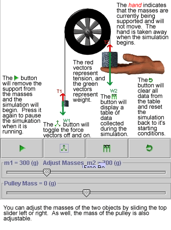

Atwood Machine
About the Applet
This applet investigates the forces involved in a typical Atwood machine in which the pulley has a certain known mass.
Using the Apple
|  |
Start by adjusting the the mass of the two objects suspended on the string by manipulating the slider marked "Adjust Masses". If you turn the force diagram on by pressing the button with the vector icon, you will notice how the tension in the string changes as you adjust the masses. Press the play button to cause the hand to let go of the mass.
Any data collected during the simulation can be graphed by pressing the graph button.
|